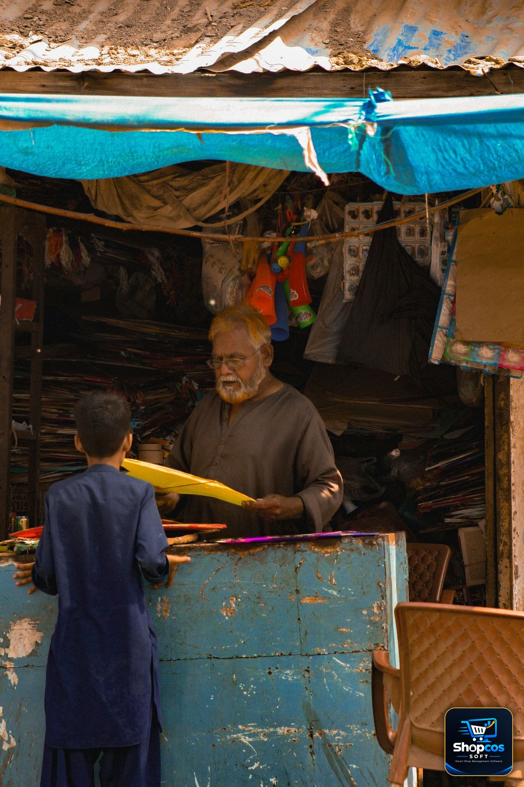

Every shopkeeper in Pakistan asks the same question, usually at the end of a long month: "Dukaan to chal rahi hai, lekin paisa kahan ja raha hai?" The shop opens every day, customers come and go, the till fills up — and yet the month ends with the same thin profit, the same udhar list, and the same feeling that the shop should be earning more than it is.
The honest answer is that most shops do not need more customers first. They need to keep more of what already passes through the counter. A shop that sells Rs 30,000 a day and leaks Rs 2,000 of it — through udhar that never comes back, stock that expires, items given away without a bill, and shelves full of things nobody buys — is poorer than a shop that sells Rs 25,000 a day and keeps nearly all of it. Earning more from your shop is rarely about one big change. It is about fifteen small ones, done every day. Here they are, grouped so you can start with the ones that pay fastest.
First, Know Your Real Profit
Before any of the fifteen ways below can work, you need one number most shopkeepers do not actually know: your real daily profit. Not your daily sale — your profit. The formula is simple, and it is the whole foundation of this article:
Daily profit = daily sales − cost of the goods sold − daily expenses (rent, electricity, staff) − leakage (udhar not recovered, expired stock, theft, unbilled items)
Take a kiryana shop selling Rs 30,000 a day. At a typical 15% gross margin, that is Rs 4,500 of gross profit. Rent, electricity and a helper might take Rs 2,000 a day. That leaves Rs 2,500 — before leakage. If Rs 500 a day disappears into udhar that is never chased and stock that expires, the real profit is Rs 2,000 a day, or about Rs 52,000 a month. Now you can see why the fifteen ways below are worth real money: every one of them attacks one line of that formula.
| Where extra money comes from | What it means in practice | Typical monthly gain* |
|---|---|---|
| Sell more per customer | Each customer spends Rs 20–50 more per visit | Rs 15,000–30,000 |
| Stop leakage | Udhar recovered, expiry cut, every sale billed | Rs 10,000–20,000 |
| New small income | Services and seasonal items on the same counter | Rs 5,000–15,000 |
*Illustrative ranges for a small shop doing roughly Rs 25,000–40,000 in daily sales. Your numbers will differ — the point is that the gains are measured in thousands per month, not hundreds.
Sell More to the Customers You Already Have
Finding a new customer costs time and money. The customer already standing at your counter costs nothing — and he is the easiest person in the world to sell one more thing to. Three ways to do it:
1. Suggest one more item, every single time
This is the oldest trick in retail, and it works because it is helpful, not pushy. The customer buys chai patti — ask if he needs cheeni. He buys shampoo — mention the sachet of oil. He buys a phone charger — ask about a cover. You are not tricking anyone; you are reminding him of something he probably needs anyway.
Do the maths: if 100 customers visit your shop a day and just 30 of them add one Rs 30 item because you asked, that is Rs 900 a day — about Rs 23,000 a month — from one sentence. Train your staff to do the same. One sentence per customer, every customer, every day. Our guide on 10 proven ways to increase sales in your retail shop goes deeper into this and nine other sales habits.
2. Bundle the things people buy together
People do not buy one item at a time — they buy a need. A mother does not buy "shampoo"; she buys the week's washing: shampoo, surf, soap. Put those together as one bundle at a price slightly lower than buying them separately, and two things happen: the customer feels she saved money, and you sold three items instead of one. Monthly rashan packs work the same way — ata, ghee, sugar, daal and tea in one bag, one price, one sale.
Bundles also quietly raise your average bill. A customer who came for Rs 200 of goods leaves with a Rs 500 bundle, and he leaves happy because the bundle was his idea — he chose the pack. Start with three bundles only: the ones built from items your customers already buy together every week.
3. Put small, high-margin items at the counter
The counter is the most valuable shelf in your shop, and most shopkeepers waste it on the bill book. Toffees, chewing gum, batteries, lighters, balm, sachets, small chocolates — these are the items people buy without thinking, while they wait for change. Their margin is far higher than ata or ghee, and they need no selling at all: they just need to be within reach and at eye level.
Rotate the counter display every two weeks. When the same toffees sit there for two months, even regular customers stop seeing them. A fresh item at the counter gets noticed, picked up, and paid for — every single day.
Bring More Customers Through the Door
More sales per customer is the fastest win. More customers is the second-fastest. You do not need advertising for this — you need to be open when people need you, visible when they walk past, and remembered when they go home.
4. Open earlier, close later — sell the hours your competitors miss
Most shops in a bazaar open at roughly the same time and close at roughly the same time. The money sits in the hours around them. The 7–9 am window belongs to the milk, bread, eggs and chai patti buyers. The 9–11 pm window belongs to the family that ran out of something after dinner. If your shutter is down during those hours, that sale goes to the shop that is open — or it waits until tomorrow, and tomorrow it may be forgotten.
You do not need to work eighteen hours yourself. Open half an hour earlier and close half an hour later, or let a trusted staff member cover the last hour. Even one extra hour of selling a day, at a modest Rs 1,500 of sales, is about Rs 35,000 of extra monthly sales — and at 15% margin, more than Rs 5,000 of extra profit.
5. Make your shop front sell for you
Your shop front is a free advertisement that works every day, and most shopkeepers never use it. Keep the entrance clean and well-lit — a dark, dusty entrance tells a walking customer the shop inside is the same. Put your best sellers where the street can see them: the fresh stock, the new item, the seasonal product. And put one simple board outside with today's offer in big, clear words: "Aaj: Surf Excel 1kg — Rs 20 off". Not ten offers. One.
Customers decide in three seconds whether to stop or walk on. A clean front, a lit sign and one clear offer are what make them stop. It costs almost nothing, and it works every single day the shop is open.
6. Use WhatsApp to bring customers back
Almost every customer you have is on WhatsApp, and almost no small shop uses that. Keep a broadcast list of your regular customers — not a group, a broadcast, so nobody sees anyone else's number — and send one useful message a week: the new stock that arrived, this week's offer, or a reminder that the monthly rashan pack is ready. One message a week, not five a day. Five a day gets you blocked; one a week gets you remembered.
The same phone can also send the bill. When a customer buys on udhar or pays in full, a photo of the bill on WhatsApp means he can never say "mujhe bill nahi mila", and it quietly reminds him what he owes. Our guide on how to send a bill on WhatsApp shows the exact steps, including the udhar statement your customer cannot argue with.

Stop the Money Leaking Out
This is where most shops lose the most money — and where the fastest gains hide. Leakage is invisible because no single loss feels big. Rs 200 of udhar here, an expired carton there, one unbilled sale a day. Add them up over a month and you are looking at the difference between a struggling shop and a comfortable one.
7. Recover your udhar — systematically, every single week
Udhar is not a favour you did for a customer; it is your money sitting in someone else's pocket. And the longer it sits there, the less of it ever comes back. The fix is not to stop giving udhar — in a Pakistani mohalla, udhar is how you keep customers — the fix is to run it like a system, not a memory.
- Write every udhar down the same day, with the customer's name, phone number, amount and date. A khata book — or better, a digital khata — is the difference between "yaad hai, kuch udhar tha" and "Rs 3,400, 12 November se".
- Set a limit per customer — for example, no more than Rs 2,000 for a regular, Rs 500 for a new face — and stop new udhar the moment the limit is crossed until the old amount is cleared.
- Chase it weekly, politely, and in writing. A short WhatsApp message every Friday — "Assalam-o-Alaikum, aap ka Rs 1,800 ka hisab baqi hai, is haftay clear kar dein to mehrbani hogi" — recovers more money than an angry conversation ever will. Accept partial payments happily: Rs 500 today is better than Rs 2,000 never.
- Review the list every month and move the truly dead accounts — people who have moved away or stopped coming — off the active list so they stop distorting what you think you are owed.
Our full guide on how to manage udhar and khata effectively covers all seven rules in detail, including the limits and the weekly follow-up routine.
The number to remember: recovering just Rs 500 of udhar a day — one customer paying back a small part of an old balance — adds about Rs 13,000 a month, or Rs 156,000 a year. That is not new sales. That is not new customers. That is money you already earned, sitting in your khata, waiting for one weekly message to bring it home.
8. Stop expiry and dead stock from eating your profit
Every expired item is a double loss: you paid for it, and then you paid to throw it away. In a medical store or kiryana shop, expiry losses of Rs 5,000–10,000 a month are common — and almost entirely preventable. Sell the oldest stock first, every time. Check expiry dates once a week, not once a season. And when an item has two months left, put it on offer or bundle it with a fast seller instead of waiting for it to expire on your shelf.
The same discipline applies to slow-moving stock generally: an item that has not sold in three months is not "stock", it is cash frozen on a shelf. Discount it, bundle it, or move it to the counter — but do not let it sit there until it is worth zero. Our guide on how to reduce losses from expired products explains the FIFO system and the expiry alerts that make this automatic.
9. Watch the till — small leakages add up to lakhs
Ask a shopkeeper how much his staff steals and he will say "mera larka imaandar hai". Ask him how much leaves the shop without a bill and he will not know — because without a bill, there is no record. The two biggest till leakages in small shops are not dramatic theft; they are quiet: a "discount" given to a friend without asking, and a cash sale that never gets written down.
The rule is simple and non-negotiable: every sale gets a bill, no exceptions — even the Rs 20 sale, even the sale to your cousin. When every item that leaves the shop is on a bill, the stock tells you the truth at the end of the day: what was sold, what was paid, and what is missing. A printed or WhatsApp bill takes ten seconds. An unbilled sale costs you the item, the money, and the record — three times over. Our guide on how to prevent theft and manage staff covers the eight most common till tricks and how to stop them without accusing anyone.
Make Your Stock Work Harder
Your shelves hold your money. Every rupee sitting in a slow item is a rupee that cannot buy a fast item. Shops that earn more are rarely the ones with the most stock — they are the ones with the right stock.
10. Stock what sells, not what you like
Every shop has a top 20: the twenty items that make most of the sales. Find yours — a billing software report shows it in one click, or a week's tally on paper will do — and protect them like gold. The top 20 should never run out. Not on a Friday evening, not in Eid week, not ever. A customer who finds his brand missing twice will buy it from the next shop, and the third time he will not come back to check.
Everything else earns its shelf space by selling. If an item sells once a month, it gets a small corner, not a full shelf — and the freed space goes to something that sells daily. Our 10 stock management tips for small shops show how to find your fast movers and order exactly the right quantity, with real rupee examples.
11. Clear dead stock before it becomes zero
Dead stock has three exits, and "keep it on the shelf" is not one of them. First, discount it — 20% off a slow item that sells is better than 100% of an item that never sells. Second, bundle it with a fast mover: a slow soap free with the popular shampoo, priced so the pair still makes a margin. Third, move it to the counter, where impulse buyers will pick it up.
Do this once a month, on a fixed day — the first Monday, for example — and treat it as a habit, not a rescue mission. A shop that clears its dead stock monthly never has a shelf full of money nobody wants, and the cash it frees buys stock that actually sells.
Add Income Without a New Shop
You do not need a second shop to earn a second income. Your counter, your customers and your location are already there — a small service on the same counter can earn every day, and it brings people in who then buy other things too.
12. Add a service: mobile load, bill payment, money transfer
The most profitable square foot in many small shops is not a shelf — it is the phone on the counter. Mobile load, utility bill payment, EasyPaisa and JazzCash agent services: each transaction earns a small commission, often Rs 5–20, and each one brings a customer through your door who would not otherwise have come today. A hundred small transactions a day at Rs 10 commission is Rs 1,000 a day — about Rs 26,000 a month — before that same customer buys a biscuit or a cold drink while he waits.
Photocopy and printing work the same way, if your shop is near a school, office or court: a small machine, a steady stream of Rs 5–10 jobs, and footfall all day. Start with one service, not five. The one your mohalla actually asks for is the one that pays.
13. Sell seasonally — stock the season, not the calendar
A shop that sells the same things in June and December is leaving money on the table twice a year. Summer brings fans, coolers, cold drinks, ORS and mosquito coils. Winter brings heaters, blankets, warm socks and dry fruit. Ramazan brings dates, Rooh Afza, besan and cooking oil in bulk. Eid brings new clothes, shoes, mehndi and gift items. The season is a wave — the shops that earn most are the ones already standing on the shelf when it arrives, not the ones ordering after it started.
Buy early and in the right quantity: a fan bought in March sells at full price in May; a fan bought in May sells at a discount in July, if it sells at all. Mark the four seasons on your calendar now, and order two weeks before each one starts.
Price Like a Business
The last two ways are about the one thing shopkeepers touch every day and almost never review: the price itself.
14. Price for profit, not just for sales
Many shopkeepers set prices by copying the shop next door, or by adding "thoda sa" to the cost and hoping it is enough. But a Rs 5 increase on an item you sell 200 times a day is Rs 1,000 a day — Rs 26,000 a month — and almost no customer notices a Rs 5 change on a daily item. Check the margin on every item at least once a quarter: cost, selling price, and the profit in rupees. The items with the thinnest margins are usually the ones you sell most — and they are the ones where a small price correction matters most.
Round your prices to make change easy, too. Prices like Rs 97 and Rs 148 slow down every sale and fill your till with coins nobody wants. Rs 100 and Rs 150 are faster at the counter, easier for the customer, and — because customers round up in their heads anyway — they often earn you a rupee or two more per sale without anyone feeling overcharged.
15. Track one number every day: today's profit
None of the fourteen ways above works if you never check whether it is working. So here is the last one, and the one that makes the other fourteen stick: every night, before you close, write down three numbers — today's total sale, today's udhar given, and today's cash in hand. Ten minutes, every night, in a register or in software. That is the whole habit.
Within a week you will see patterns you never noticed: which day is your best, which item actually makes the money, how much udhar went out versus how much came back. Within a month you will know your real profit — the number from the start of this article — and you will be able to set a target for next month and watch yourself hit it. Our guide on the day-closing habit gives the exact 10-minute routine, step by step.
How shopcos soft Helps
Every way in this article gets easier when the counter runs on a system instead of memory. That is what shopcos soft is built for — a small shop's counter, in Pakistan, in Urdu and English:
- Fast billing with a bill for every sale — so nothing leaves the shop unbilled, and the till always matches the stock.
- Khata and udhar on the screen — every customer's balance, limit and history, with a weekly recovery list and WhatsApp statements that customers cannot argue with.
- Stock alerts and expiry warnings — your top 20 never run out, and nothing expires quietly on a back shelf.
- A daily profit report — today's sale, today's profit, today's udhar, in one screen, every night. No register, no calculator, no guessing.
- Offline, on your own PC — load shedding does not stop billing, and your data stays on your computer with a daily automatic backup.
Try it on your own counter for a week, with your own customers and your own stock, and judge it on your busiest evening. That is the test any shop system has to pass, and it is why we offer a 7-day FREE trial with plans starting at Rs 25,000, one-time. Questions first? Message us on WhatsApp at 0326 4025618 — Urdu mein baat ho jayegi.
The Bottom Line
Earning more from your shop does not need a loan, a bigger shop, or a new business. It needs fifteen small habits, and you do not need all fifteen at once. Pick three this week — the ones that pay fastest for your shop. For most shops those three are: suggest one more item to every customer, chase your udhar every Friday, and write down today's profit every night. Do those three for a month and count the difference. Then add three more.
A shop is not a lottery ticket. It is a machine that turns customers, stock and trust into money — and like any machine, it earns more when it is looked after properly. The customers are already coming. The stock is already on the shelves. The money is already there. Now go and collect it — and if you want the counter to do half of this work for you, our POS cost guide shows what the whole setup costs in rupees, one-time, with no monthly bill.
Photo credits: Two men at a shop counter in a marketplace with payment signs and products displayed photo by SRIPADA STUDIOS · Warmly lit entrance of a small store with shelves stocked full at night photo by Mehmet Mert Mutlu · A local shopkeeper assisting a young boy at a market stall in sunny Pakistan photo by Tayyaba zahoor — all via Pexels.